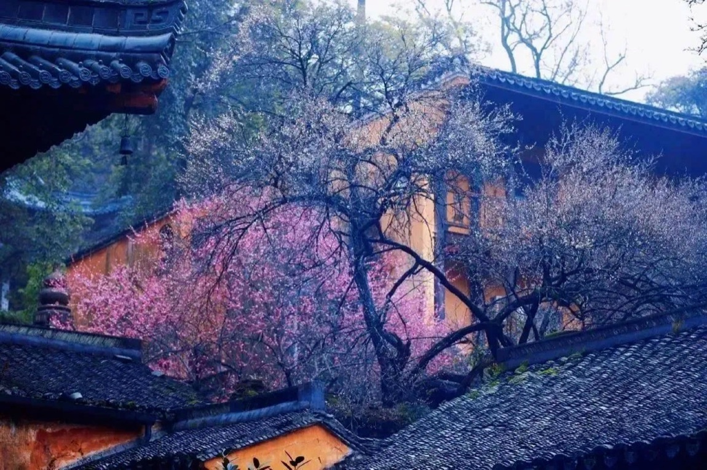
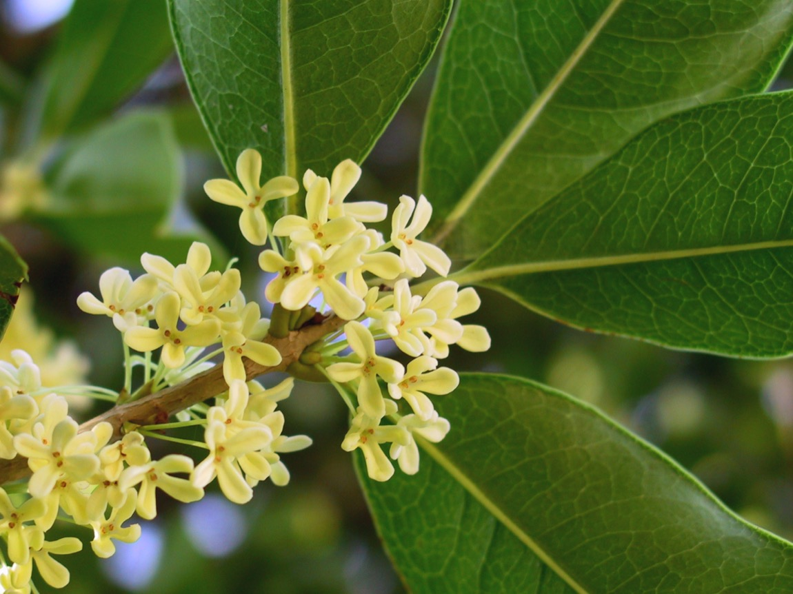
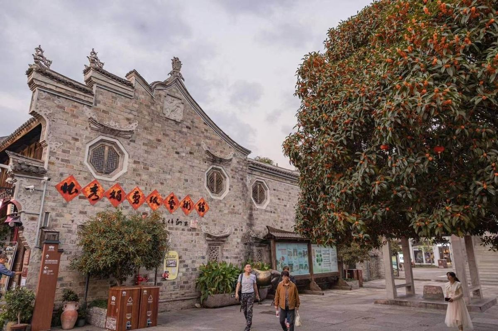
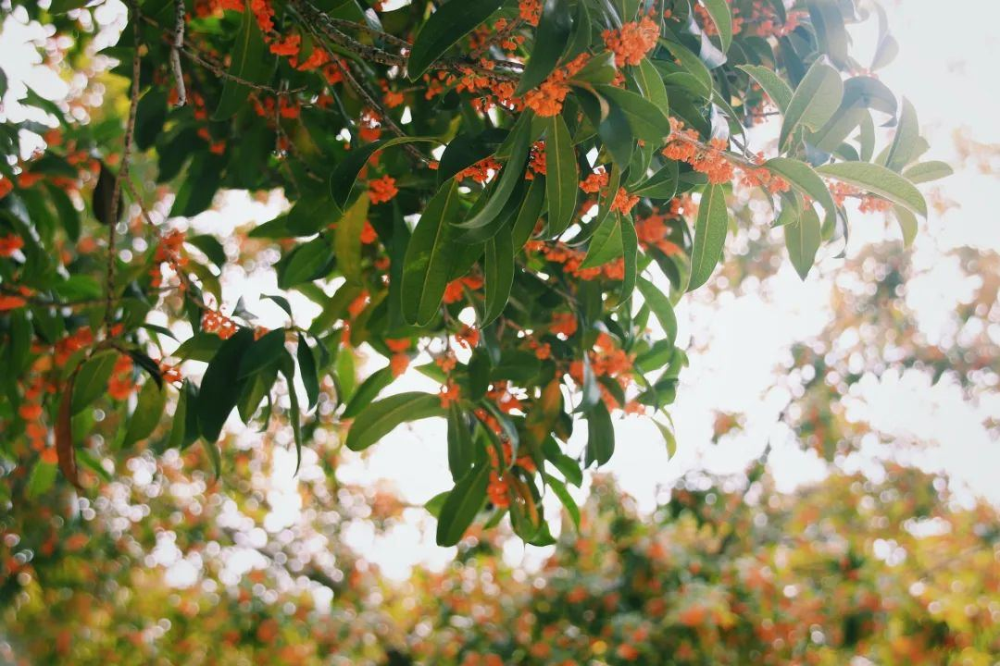
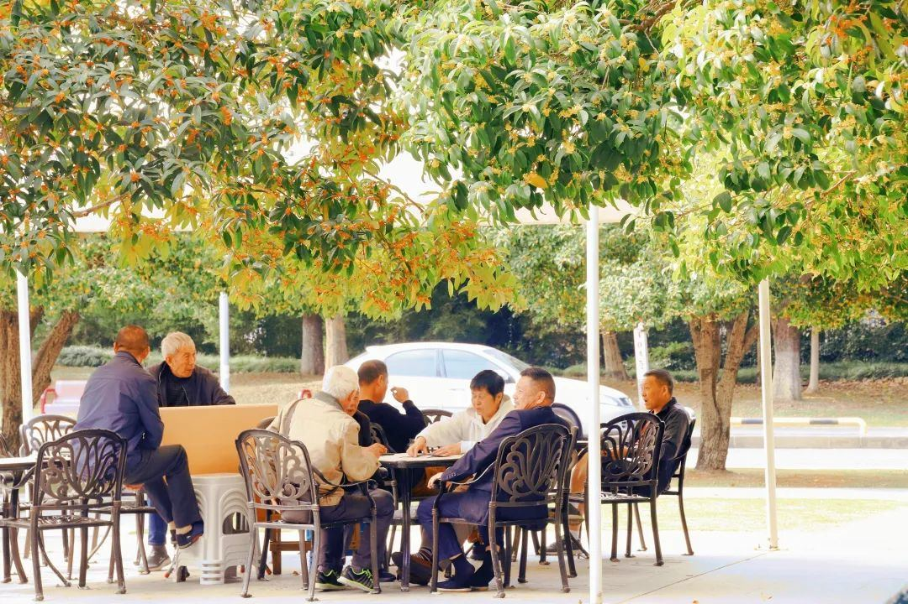

1994
台州设立地级市
由多片城区、古城与山海空间共同组成的台州，需要能够被市民共同认识的城市象征。
1998 年，台州根据市民投票选定梅花与桂花。本页再从自然、文化和生活三个角度，读懂这份“双花选择”。
由多片城区、古城与山海空间共同组成的台州，需要能够被市民共同认识的城市象征。
台州本地媒体回顾：市人大常委会依据市民投票，确定梅花、桂花为市花，樟树为市树。
台州既有山地与临海古城，也有沿海城区和日常绿地。梅花先于叶开放，桂树四季常绿、秋天散香，两种花让城市自然景观从冬春延伸到秋季；一枝可细看，一树可闻香。
临海府城墙、台州府城梅园给梅花提供可见的历史场景；梅在中国文化里常与迎春、坚韧相连。桂花在传统文化中有“折桂”等美好意象，能将城市的历史韵味延伸到街巷与庭园。
梅园是人们早春走出家门、赏景拍照的目的地；桂花则分布在市民广场、江滨公园等熟悉的公共空间。一种值得专程去看，一种在日常路上就能遇见，共同进入市民的生活记忆。
梅花的早春、枝骨和府城实景，适合表达台州的历史纵深与迎新精神；桂花的秋香、常绿和城市绿地场景，适合表达温润、亲近的生活气息。两者花期、观看方式和空间体验各不相同，放在一起，城市形象更完整。
以上为调研后的文化解读，不作为当年评选的官方理由。认识花的样子、生长节奏，也走到台州真实的赏花地点。

冬末春初 · 临海蔷薇科落叶小乔木。花多先于叶开放，白、粉、红等颜色点亮尚显疏朗的枝条；5—6 月还可见梅果。临海府城的梅景把花与石墙、山势放在同一个画面里。

秋季 · 台州木犀科常绿乔木或灌木。小花成簇，藏在革质叶片之间，通常在 9—10 月开放，以香气先于花形被人察觉。公园、广场与街道让这份花香融入日常。
沿城墙与山坡看花，也能在照片里找到古城、梅枝和游客之间的关系。



本地赏桂报道提到的公共空间。照片呈现台州街巷、公园树荫与桂花近景。
花是可见、可闻的城市符号。沿着真实花景，读出它们各自代表的城市特色与文化意义。
梅花在寒意未退时先开，疏朗的枝干与临海府城墙的线条相映。它使“历史台州”有了一个可以亲自走近的画面。
桂花花小香远，常绿的树冠进入公园、广场与街道。它使“生活台州”成为一段能被气味唤起的日常记忆。
梅花给台州一条回望古城的线索，桂花让人感到城市生活的温度。它们分别从“可走访的历史”和“可分享的日常”出发，组成这座山海城市更立体的文化形象。以上象征意义为本页解读。
从古城墙到街巷树荫。选择花种浏览，点击照片可以放大。
点选 1—12 月，观察梅花与桂花从花、叶到果与花芽的变化。照片展示台州花景及植物细节；非花期照片用于观察环境与叶片，并非对应月份的实拍记录。
二月的台州府城梅园常能看到梅花与城墙相映。开放早晚随气温变化，出行前请查看当年的花讯。
提示：不同品种、海拔与当年气温都会改变开花时间；桂花以秋桂的常见花期为主，四季桂等品种可多次开花。植物生长阶段参考高校与园林科普，台州赏花照片另见资料来源。
按季节收集两枚花章。地点和季节参考台州本地文旅报道，出行前请查看当年的花期与开放信息。
沿古城墙看梅花，留意粉白花枝与石墙、山势的层次。
慢慢走过桂花树下，试着先闻花香，再寻找藏在叶间的小花。
三道小题，回顾市花的由来和两种花承载的城市记忆。
从资料判断、图片选择到界面交互，我希望网页中的每一种花都对应真实的台州生活。
这次网页设计以“早春的梅花、金秋的桂花”为叙事线索。我原本以为市花只是一个好看的城市标志，查阅资料后才发现，它的确定与市民投票、城市环境和地方记忆有关。台州本地报道记载，1998年市人大常委会根据市民投票选定梅花和桂花为市花。这让我决定把“为什么是两种花”放在网页前半部分，而不只是展示花卉照片。
在内容安排上，我先在第一板块梳理双市花确立的过程，并从自然环境、历史文化和社会生活三个角度说明这项选择；第二板块介绍两种花和真实赏花地点；第三板块再比较它们承载的城市特色与文化意义。梅花与临海府城梅园的古城墙相连，容易让人联想到早春、坚韧和迎新；桂花则出现在广场和街道，花朵虽小，却以香气进入日常。我认为这两种不同的城市体验，能共同说明台州既有历史的厚度，也有生活的温度。
视觉上，我选用暖纸色作为底色，用深绿、桂金和梅粉分别呼应树叶与两种花。照片尽量选择可追溯的真实影像，并在页面末尾标明出处。互动部分没有只追求热闹：切换按钮帮助读者对照两种市花，地点相册可以放大浏览，一年花期卡让读者看到花期之外的生长，赏花章和小测帮助回顾重点。制作过程中我也注意到，公开资料对台州双市花的介绍有详有略，因此在网页中写明资料依据，把象征意义标为设计解读，不把推测写成官方结论。这个作品让我体会到，好的城市文化网页既要好看，也要让信息真实、清楚、容易被记住。
图片：台州府城梅景 © 中国青年网／CFP；古建筑旁梅花 © 浙江在线；台州街景桂花 © 国企动态；桂花特写 © Wikimedia Commons。补充照片来自浙江在线台州赏桂报道。图片仅用于本次课程作品展示，版权归原作者及机构所有。